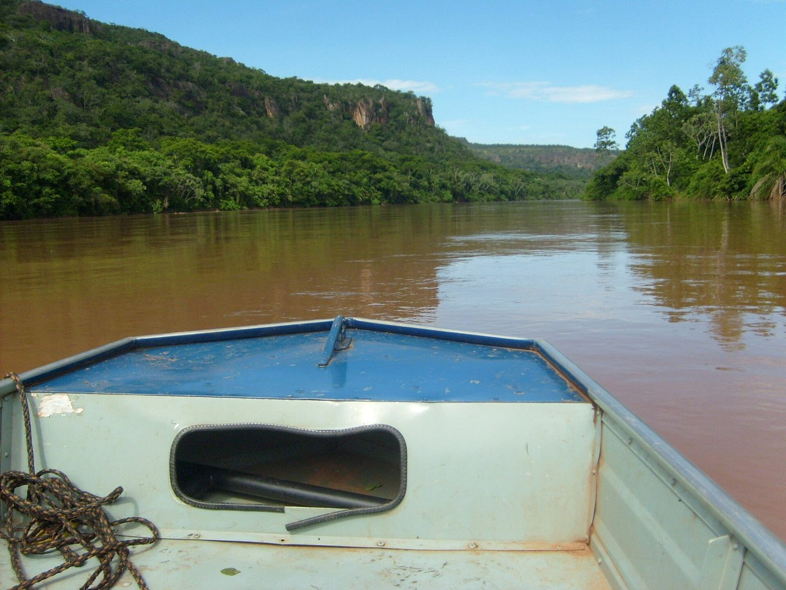

Capítulo 1 · Trecho 1
Margens do Rio Vermelho
Reserva João Basso, Rondonópolis (MT). O rio que deu o primeiro nome ao povoado corre entre paredões de arenito e mata ciliar. Na cheia, a água fica barrenta com a terra vermelha que as chuvas carregam.
← → andar · Espaço pular (segure para ir mais alto) · ↓ + Espaço desce do píer
Protótipo da nova direção visual: foto real no plano distante, cenário desenhado à frente e personagens em desenho 2D. Os personagens são provisórios até chegar a arte do ilustrador.